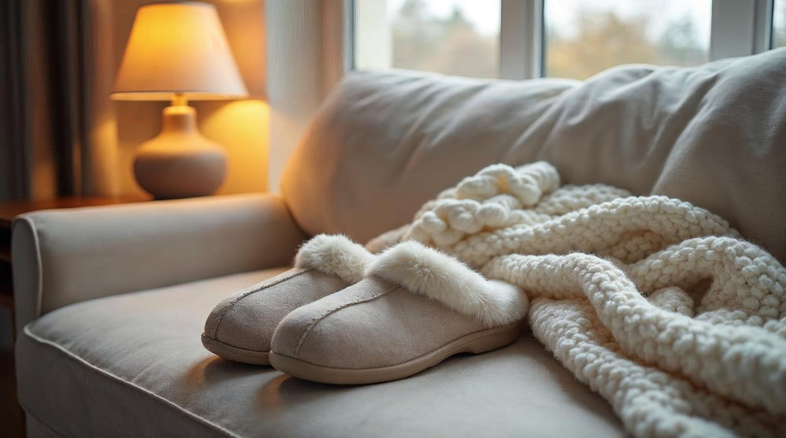
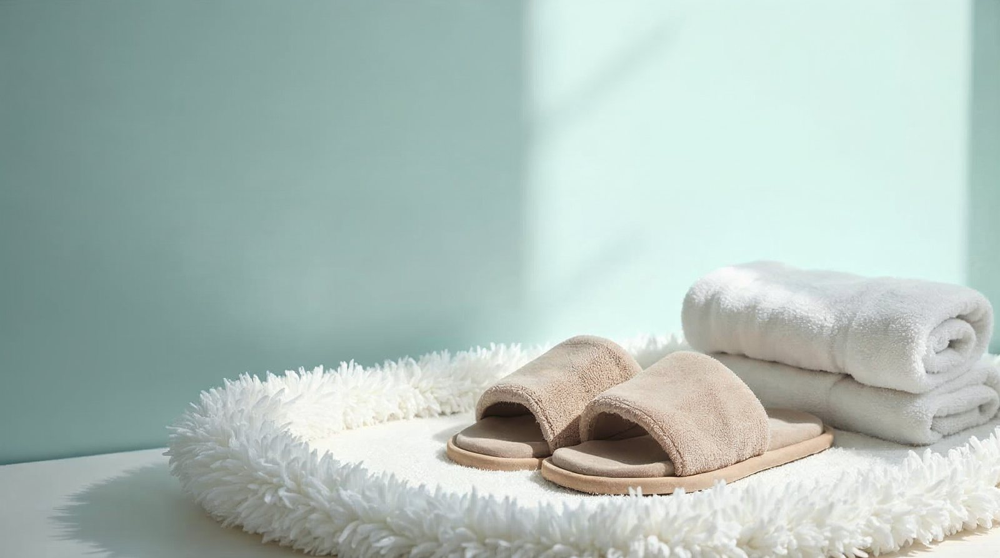
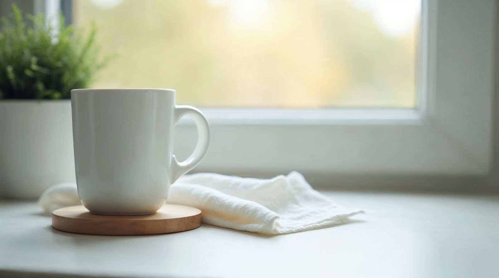
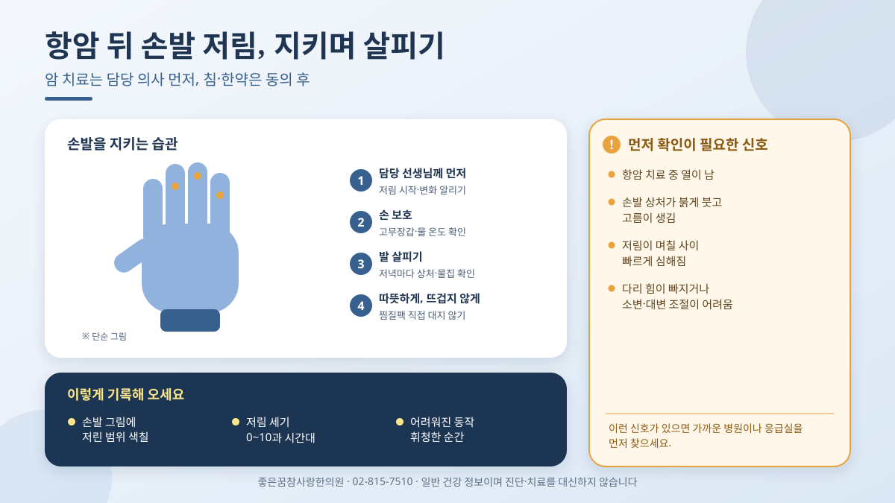

이종호 한의사 감수좋은꿈참사랑한의원 대표원장 (한의사 면허번호 19769)발행 2026-11-26 · 수정 2026-11-27
이 글의 차례
단추를 채우려는데 손끝이 말을 듣지 않아요. 셔츠 단추 하나에 한참이 걸리고, 동전을 집으려다 몇 번이나 놓칩니다. 밤에 이불 속에 누우면 발바닥이 얇은 장갑을 낀 것처럼 멍하고, 어떤 날은 바늘로 콕콕 찌르는 듯 따끔거리죠.
항암 치료를 받는 동안, 혹은 마친 뒤에 이런 손발 저림을 말씀하시는 분이 많아요. "치료는 끝났다는데 손발은 왜 그대로일까요?" 그 질문에는 몸이 아직 회복의 길 위에 있다는 답답함이 담겨 있거든요. 그 답답함, 충분히 그럴 만해요.
저는 여기서 두 가지를 나눠 생각해요. '항암 치료가 끝났다'는 것과 '손발의 감각이 다 돌아왔다'는 건 다른 얘기예요. 치료를 마친 뒤에도 감각이 돌아오는 데는 시간이 걸리는 경우가 많고, 그 속도도 사람마다 다르거든요.
먼저 분명히 말씀드려요. 좋은꿈참사랑한의원은 암을 치료하는 곳이 아닙니다. 암의 치료와 항암제 조절, 부작용에 대한 판단은 담당 종양 전문의가 이끄는 게 순서예요. 침이나 한약, 온열 관리도 담당 선생님께 알리고 동의하신 경우에만 함께 상의합니다.
그 전제 위에서, 이 글은 항암 치료 뒤 손발 저림이 무엇인지, 일상에서 무엇을 조심하면 좋은지, 한의원에서는 어떤 범위에서 함께 살필 수 있는지를 정리했어요. 담당 선생님과 나누실 이야기를 정리하는 데에도 쓰시면 좋겠습니다.

항암 치료 뒤 말초신경병증은 어떤 상태인가요
말초신경은 뇌와 척수에서 나와 손끝, 발끝까지 뻗어 있는 가는 신경입니다. 감각을 전하고, 근육에 움직이라는 신호를 보내고, 땀과 피부 온도 같은 일도 맡습니다. 이 신경이 항암제의 영향을 받으면 저림, 따끔거림, 화끈거림, 감각 둔화가 생길 수 있습니다.
대개 손끝과 발끝에서 시작해 장갑과 양말을 신는 범위처럼 올라오는 모습을 보입니다. 양쪽에 비슷하게 오는 경우가 많고, 찬 것을 만질 때 더 찌릿하거나 밤에 더 도드라지게 느껴지기도 합니다.
증상이 심해지면 단추 채우기, 젓가락질, 글씨 쓰기 같은 손의 섬세한 일이 어려워지고, 발바닥 감각이 둔해지면서 어두운 곳이나 울퉁불퉁한 길에서 휘청이기 쉬워집니다. 넘어짐을 조심해야 하는 이유가 여기에 있습니다.
왜 항암제가 손발 신경에 영향을 줄까요
항암제 가운데 일부는 빠르게 자라는 세포를 겨냥하는 과정에서 가늘고 긴 말초신경에도 영향을 줍니다. 신경 끝은 몸통에서 가장 멀리 있어 영양과 회복의 손길이 늦게 닿는 자리라서, 손끝과 발끝부터 증상이 나타나기 쉽습니다.
어떤 약을 얼마나 맞았는지, 이미 당뇨나 술, 비타민 부족처럼 신경을 약하게 하는 조건이 있었는지에 따라 증상의 정도와 기간이 사람마다 크게 다릅니다. 치료 중에 생겼다가 마친 뒤 몇 달에 걸쳐 서서히 줄어드는 분도 있고, 더 오래 남는 분도 있습니다.
그래서 저림이 시작되거나 심해지면 담당 선생님께 먼저 알리는 것이 무엇보다 중요합니다. 증상의 정도에 따라 담당 선생님이 약의 용량이나 일정을 조정하기도 하는데, 이 판단은 담당 선생님만이 하실 수 있습니다.
다른 손발 저림과는 어떻게 다른가요
손목에서 엄지·검지 쪽이 저린 손목터널증후군, 목에서 팔로 저림이 내려오는 목디스크, 허리에서 다리로 내려오는 저림은 대개 한쪽이나 특정 신경 길을 따라 나타납니다. 자세에 따라 심해지거나 덜해지는 것도 특징입니다.
항암 치료 뒤의 말초신경병증은 양쪽 손끝과 발끝에 비슷하게 오고, 자세와 크게 관계없이 이어지는 경우가 많습니다. 다만 두 가지가 함께 있을 수도 있어서, 저림의 위치와 모양을 자세히 나눠 보는 것이 도움이 됩니다.
당뇨가 있는 분은 당뇨로 인한 신경병증과 겹치기도 합니다. 저림이 어느 시점부터 시작됐는지, 항암 치료 전에도 있었는지를 떠올려 두시면 담당 선생님과 이야기를 나누기가 쉬워집니다.
지금 내 손발은 어떤가요
아래 항목으로 요즘 상태를 한번 짚어 보세요. 담당 선생님께 알려 드릴 때도 그대로 쓰실 수 있습니다.
- 저린 범위가 손끝·발끝에만 있는지, 손목·발목 위까지 올라왔는지
- 단추 채우기, 젓가락질, 글씨 쓰기가 예전보다 어려운지
- 찬물이나 찬 물건을 만질 때 찌릿함이 심해지는지
- 발바닥이 두꺼운 양말을 신은 듯 둔한지
- 어두운 곳이나 계단에서 휘청인 적이 있는지
- 저림 때문에 잠을 설치는지
치료 일정에 따라 달라지는 하루
항암 치료를 몇 주 간격으로 받으시는 분은 주사를 맞은 직후 며칠과 다음 치료 직전의 몸 상태가 크게 다릅니다. 저림도 치료 직후에 도드라졌다가 조금 가라앉는 흐름을 보이기도 합니다. 이 흐름을 알면 힘든 날과 덜 힘든 날의 일정을 나눠 잡기 쉬워집니다.
힘든 며칠은 손을 많이 쓰는 일, 칼질이나 뜨거운 냄비를 다루는 일을 가족에게 부탁하시고, 몸이 가벼운 날에 장보기나 걷기를 하시는 식으로 하루를 나눠 보세요. 내 몸의 달력을 만든다고 생각하시면 됩니다.
손을 쓰는 일을 덜 힘들게
손끝 감각이 둔해지면 작은 일에서 자꾸 막힙니다. 도구를 조금 바꾸는 것만으로도 하루가 한결 수월해질 수 있습니다.
단추 대신 지퍼나 똑딱이가 달린 옷, 끈 대신 밴드형 신발을 고르면 옷 입고 나서는 시간이 줄어듭니다. 손잡이가 굵은 숟가락과 펜, 미끄럼 방지 매트를 쓰면 쥐는 힘이 덜 듭니다. 병뚜껑은 고무 오프너를 쓰면 손끝에 힘을 덜 주고도 열 수 있습니다.
휴대폰 글씨를 크게 키우고 음성 입력을 쓰는 것도 도움이 됩니다. 손이 말을 듣지 않는 날, 스스로를 탓하기보다 도구의 도움을 받는 것이 몸을 아끼는 방법입니다.
마음이 지칠 때
저림은 눈에 보이지 않아 주변 사람이 잘 알아채지 못합니다. 겉으로는 괜찮아 보이는데 단추 하나에 쩔쩔매는 자신을 보면 서글퍼지기도 합니다. 그런 마음이 드는 것은 자연스러운 일입니다.
가족에게 지금 어떤 일이 힘든지 구체적으로 말씀해 주세요. "손이 저려서 병뚜껑이 안 열려"라고 말하면 도움을 주고받기가 훨씬 쉬워집니다. 마음이 오래 가라앉는다면 치료받는 병원의 상담 프로그램을 이용해 보시는 것도 좋습니다.
먼저 이렇게 여쭙니다
처음 오시면 대략 이런 순서로 여쭙니다.
- 어떤 암으로, 어느 병원 어느 선생님께 치료받고 계신가요?
- 어떤 항암제를 언제부터 언제까지 맞으셨나요?
- 저림은 언제 시작됐고, 지금은 좋아지는 중인가요, 그대로인가요?
- 담당 선생님께 저림을 말씀드렸나요? 받은 약이나 안내가 있나요?
- 침이나 한약에 대해 담당 선생님께 여쭤 보셨나요?
- 당뇨, 갑상선, 술처럼 신경에 영향을 줄 수 있는 다른 조건이 있나요?
담당 선생님께 침이나 한약을 아직 여쭤 보지 않으셨다면, 그 질문부터 함께 정리해 드립니다. 동의를 확인한 뒤에 무엇을 함께할지 정하는 것이 순서입니다.
일상에서 먼저 해 볼 수 있는 것
감각이 둔해진 손발은 다쳐도 잘 모르고 지나가기 쉽습니다. 저림을 줄이는 것만큼 손발을 지키는 것이 중요합니다.
- 설거지나 요리할 때 고무장갑을 끼고, 뜨거운 물 온도는 팔꿈치로 먼저 확인하기
- 맨발로 다니지 않고, 발가락이 넉넉한 편한 신발 신기
- 저녁마다 발바닥과 발가락 사이를 눈으로 살펴 상처나 물집 확인하기
- 밤에 화장실 가는 길에 수면등 켜 두기
- 찬 것을 만지면 심해지는 분은 냉장고 물건을 꺼낼 때 장갑 쓰기
- 주먹 쥐었다 펴기, 발가락 오므렸다 펴기를 틈틈이
손발이 차가우면 저림이 더 도드라지는 분이 많습니다. 양말과 장갑으로 따뜻하게 지키시되, 감각이 둔한 손발에 뜨거운 찜질팩이나 전기장판을 직접 대면 화상을 입기 쉬우니 피하시는 편이 좋습니다.
걷기는 균형과 다리 힘을 지키는 데 도움이 되지만, 발바닥 감각이 둔하다면 평평하고 밝은 길에서, 필요하면 지팡이나 난간의 도움을 받아 걸으세요. 담당 선생님이 운동 범위를 따로 정해 주셨다면 그 안에서 하시면 됩니다.

발을 지키는 습관
발바닥 감각이 둔해지면 신발 속 작은 돌이나 꽉 끼는 신발이 만든 상처를 모르고 지나치기 쉽습니다. 신발을 신기 전에 안을 한 번 털어 보고, 새 신발은 짧은 시간부터 신어 길들이세요. 양말은 솔기가 도드라지지 않고 발을 조이지 않는 것이 편합니다.
발톱은 일자로 짧지 않게 자르고, 굳은살을 칼로 깎는 일은 피하시는 편이 좋습니다. 씻은 뒤에는 발가락 사이까지 잘 말리고 보습제를 발라 갈라짐을 막아 주세요. 당뇨가 함께 있는 분이라면 발 관리를 더 꼼꼼히 하시고, 상처가 잘 낫지 않으면 담당 선생님께 보여 드리세요.
한의원에서 함께 살필 수 있는 경우
- 담당 선생님이 동의하신 범위에서 손발 저림과 냉감을 함께 살피고 싶은 경우
- 저림 때문에 밤잠을 설치고 낮에 기운이 떨어지는 경우
- 손발이 유난히 차고 추위를 많이 타는 경우
- 치료를 마친 뒤 어깨, 목, 허리가 굳어 몸이 무거운 경우
- 입맛과 소화가 아직 예전처럼 돌아오지 않은 경우
좋은꿈참사랑한의원에 오시면 모든 분의 맥을 먼저 짚고, 저린 범위와 손발 온도, 걸음을 살핍니다. 담당 선생님의 동의를 확인한 뒤, 진찰한 내용을 바탕으로 가벼운 침, 온열 관리, 한약 상담 가운데 지금 상태에 맞는 것을 정합니다.
혈액 수치가 낮거나 감염에 약한 시기에는 침을 미루기도 하고, 감각이 둔한 자리에는 온열 관리를 아주 조심스럽게 합니다. 한약은 항암 치료 중에는 다른 약과의 관계 때문에 특히 신중하게 보고, 담당 선생님과 상의 없이 시작하지 않습니다. 처방받은 약은 멈추지 않습니다.
한의원은 암 치료를 대신하거나 줄이자고 권하지 않습니다. 담당 선생님이 이끄는 치료 곁에서, 그분이 괜찮다고 한 범위 안에서 일상의 불편을 함께 듣는 자리라고 생각해 주세요.

담당 선생님께 이렇게 말씀해 보세요
진료 시간이 짧다 보면 저림을 "좀 저려요" 한마디로 넘기기 쉽습니다. 담당 선생님이 약을 조정할지 판단하려면 저림이 일상에 얼마나 영향을 주는지가 중요한 정보가 됩니다.
"단추를 채우는 데 예전보다 두 배 걸려요", "젓가락으로 콩을 못 집어요", "계단에서 난간을 꼭 잡아야 해요"처럼 구체적인 동작으로 말씀하시면 전달이 훨씬 정확해집니다. 아래 기록을 진료 전에 한 장으로 정리해 가시는 것도 좋습니다. 침이나 한약에 대해서도 이때 함께 여쭤 보세요.
이렇게 기록해 오시면 상담이 쉬워집니다
이 기록은 담당 선생님께도 그대로 보여 드리면 좋습니다.
- 항암 치료 날짜와 맞은 약 이름
- 저림의 범위를 손발 그림에 색칠하기(주 1회)
- 저림의 세기를 0~10으로, 하루 중 언제 심한지
- 단추, 젓가락, 계단처럼 어려워진 일상 동작
- 밤에 저림 때문에 깬 횟수
- 휘청하거나 넘어질 뻔한 순간
주마다 색칠한 그림을 나란히 놓으면 저림이 넓어지는지, 줄어드는지가 한눈에 보입니다. 말로 설명하기 어려운 변화를 전하는 데 가장 쉬운 방법입니다.
회복의 길 위에서
항암 치료를 견뎌 낸 몸은 이미 큰일을 해낸 몸이에요. 손발의 감각이 돌아오는 속도는 사람마다 다르지만, 그동안 다치지 않게 지키고, 따뜻하게 하고, 조금씩 움직이는 것만으로도 할 수 있는 일이 많아요. 담당 선생님과 먼저 이야기 나누시고, 그다음 걸음을 함께 정해 보겠습니다.
회복은 곧게 뻗은 길보다 오르내림이 있는 길에 가까워요. 원래 그래요. 어떤 주는 조금 가벼운 것 같다가 다음 주에 다시 저린 날이 오기도 하거든요. 그럴 때 기록이 있으면 전체 흐름을 차분히 볼 수 있어요. 하루의 저림에 마음을 다 내어 주기보다 몇 주의 흐름을 함께 보며, 할 수 있는 일을 하나씩 늘려 가면 좋겠습니다.
손발과 몸 전체를 살피는 건 제 몫으로 두세요. 부탁드리고 싶은 건 하나예요. 설거지나 샤워 전에 뜨거운 물 온도를 손끝이 아닌 팔꿈치로 먼저 확인하는 습관이요. 감각이 무딘 손발은 뜨거운 걸 늦게 알아차리기 쉬워서, 이 하나가 다치는 일을 줄이는 데 도움이 돼요.
오늘 단추 하나를 혼자 채우셨다면 그것도 작은 회복이에요. 그런 순간을 기록에 함께 적어 두세요. 힘든 날의 기록만큼 좋았던 날의 기록도 소중하거든요. 그 기록을 들고 오시면 거기서부터 함께 보겠습니다.
이런 증상은 먼저 확인이 필요합니다
- 항암 치료 중 38도 이상 열이나 오한이 있을 때, 손발 상처가 붉게 붓거나 고름이 생길 때
- 저림이 며칠 사이 빠르게 번지거나, 다리 힘이 빠지거나, 대소변 조절이 어려울 때
이런 신호가 있으면 한의원보다 가까운 병원이나 응급실을 먼저 찾으세요.
함께 읽으면 좋은 글
- 항암 치료 중이거나 마친 뒤 일상의 기운·입맛·잠을 한의원과 상의하고 싶을 때는 어떻게 하나요?
- 당뇨가 있는데 발끝이 저리고 화끈거리거나 감각이 둔해지는 말초신경병증은 어떻게 살피나요?
- 발이 차서 잠이 잘 오지 않을 때는 어떻게 하나요?
- 70대 어르신 집의 욕실과 현관은 낙상을 줄이려면 어떻게 점검하나요?
- 충분히 쉬어도 몸이 늘 피곤한 만성피로는 어떤 점을 살펴보나요?

여쭙는 것
- 어떤 암으로, 어느 병원 어느 선생님께 치료받고 계신가요?
- 어떤 항암제를 언제부터 언제까지 맞으셨나요?
- 저림은 언제 시작됐고, 지금은 좋아지는 중인가요, 그대로인가요?
생활에서 해 볼 것
- 설거지나 요리할 때 고무장갑을 끼고, 뜨거운 물 온도는 팔꿈치로 먼저 확인하기
- 맨발로 다니지 않고, 발가락이 넉넉한 편한 신발 신기
- 저녁마다 발바닥과 발가락 사이를 눈으로 살펴 상처나 물집 확인하기
한의원에서 함께 살필 것
- 담당 선생님이 동의하신 범위에서 손발 저림과 냉감을 함께 살피고 싶은 경우
- 저림 때문에 밤잠을 설치고 낮에 기운이 떨어지는 경우
- 손발이 유난히 차고 추위를 많이 타는 경우
먼저 확인이 필요한 신호
- 항암 치료 중 38도 이상 열이나 오한이 있을 때, 손발 상처가 붉게 붓거나 고름이…
- 저림이 며칠 사이 빠르게 번지거나, 다리 힘이 빠지거나, 대소변 조절이 어려울 때
한눈에 보는 표
| 구분 | 핵심 |
|---|---|
| 여쭙는 것 | 어떤 암으로, 어느 병원 어느 선생님께 치료받고 계신가요? 어떤 항암제를 언제부터 언제까지 맞으셨나요? |
| 생활에서 해 볼 것 | 설거지나 요리할 때 고무장갑을 끼고, 뜨거운 물 온도는 팔꿈치로 먼저 확인하기 맨발로 다니지 않고, 발가락이 넉넉한 편한 신발 신기 |
| 한의원에서 함께 살필 것 | 담당 선생님이 동의하신 범위에서 손발 저림과 냉감을 함께 살피고 싶은 경우 저림 때문에 밤잠을 설치고 낮에 기운이 떨어지는 경우 |
| 먼저 확인이 필요한 신호 | 항암 치료 중 38도 이상 열이나 오한이 있을 때, 손발 상처가 붉게 붓거나 고름이 생길 때 저림이 며칠 사이 빠르게 번지거나, 다리 힘이 빠지거나, 대소변 조절이 어려울 때 |
자주 묻는 질문
한의원에서 항암 치료 부작용을 치료할 수 있나요?
한의원은 암이나 항암 치료를 대신하지 않습니다. 저림이 생기면 담당 종양 전문의께 먼저 알리시고, 담당 선생님이 동의하신 범위 안에서 손발 냉감, 잠, 몸의 긴장 같은 일상의 불편을 함께 살핍니다.
항암 치료 중에 침을 맞아도 되나요?
담당 선생님께 먼저 여쭤 보시고 동의를 확인한 뒤에 정합니다. 혈액 수치가 낮거나 감염에 약한 시기에는 침을 미루는 경우가 있으니 최근 검사 결과를 함께 알려 주세요.
손발 저림에 좋다는 건강식품을 먹어도 될까요?
항암 치료 중에는 건강식품이나 영양제도 약과 겹칠 수 있어서, 드시기 전에 담당 선생님과 먼저 상의하시길 권합니다.
저림은 언제쯤 좋아지나요?
맞은 약과 용량, 원래의 몸 상태에 따라 사람마다 크게 다릅니다. 치료를 마친 뒤 몇 달에 걸쳐 서서히 줄어드는 분도 있고 더 오래 남는 분도 있어서, 기록을 남겨 담당 선생님과 흐름을 함께 보시는 것이 좋습니다.
좋은꿈참사랑한의원은 재진 때 지난번 이야기부터 이어서 여쭙니다. 진료시간과 예약은 오시는 길에서 확인하세요.
어디서 상담받을 수 있나요?
좋은꿈참사랑한의원은 서울 동작구 만양로2길 2 신성빌딩 3층·5층(서울 동작구 상도동, 7호선 상도역 3번 출구 근처)에 있습니다. 한의사 3명(이종호 대표원장, 조영기 수석진료원장, 정원영 진료원장)이 진료합니다. 진료시간은 평일 09:30~20:00(점심 13:00~14:00), 토·일·공휴일 09:30~15:00이며, 방문 전 전화로 확인을 권합니다. 예약은 네이버 예약, 카카오톡 상담, 전화 02-815-7510로 받습니다.
이 글은 일반적인 건강 정보이며 개인의 진단이나 치료를 대신하지 않습니다. 증상이 있거나 복용 중인 약이 있다면 진료를 통해 확인하세요. 치료 효과는 개인마다 다를 수 있습니다.
작성 기준: 일반적으로 알려져 있는 건강 정보를 참고해 정리했습니다(대표원장 감수). 증상 기록은 1~2주 동안 하루 1회, 비슷한 시간에 적어 오시면 지난 상태와 비교하기 쉽습니다.